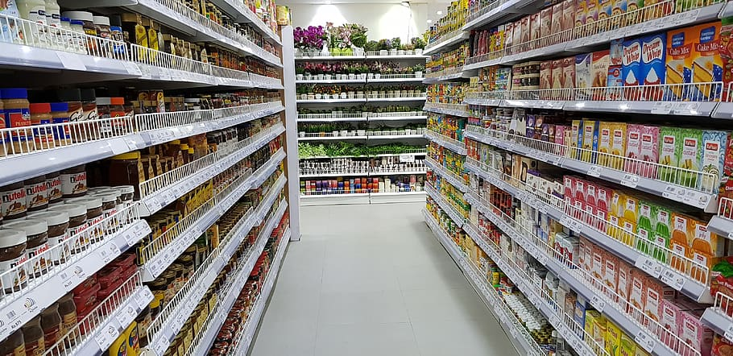
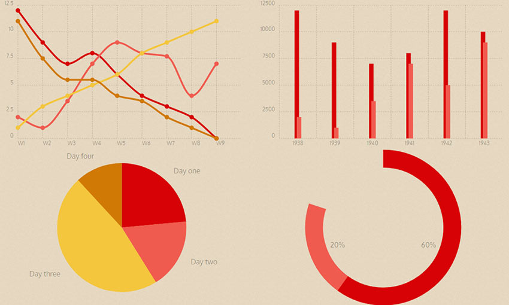

This project is about getting insights from the US Police shootings from 2015-2022.
From querying the data i was able to determine the year with the highest deaths from Police shootings, the age group with the most deaths on record and the state with the highest deaths from Police shootings.
In this project,I analyzed over 900 patients data in order to predict heart failure in patients based on diagnostic measurements and associated risk factors.

In this project,I analysed over 500,000 sales transactions data to identify trends and patterns that could be used to improve the company's sales efforts .
In this project I scraped the Airbnb website to find all the Locations,Names and Prices of Hotels per night in Zanzibar.

Dashboards and Reports created to visualize key insights using Tableau.

Dashboards created to visualize key insights from datasets using Power BI.